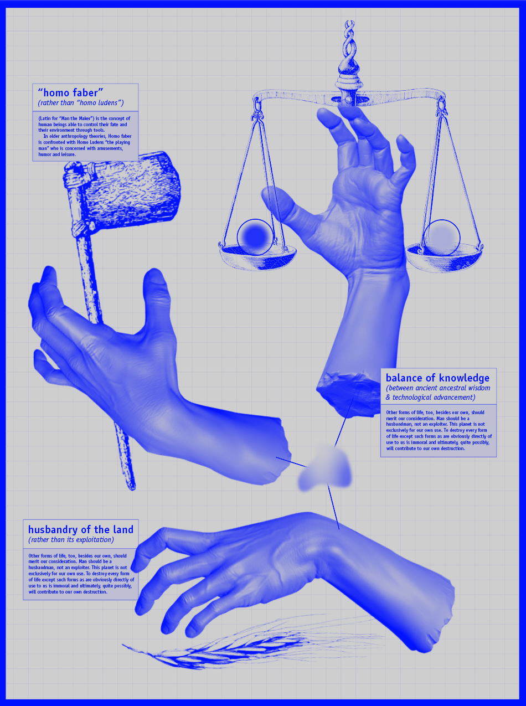

Going into the first week of the Masters, I was feeling confident and secure as I was already accustomed to the campus and the student environment, I felt ready to venture into this new academic journey. For that day, we had an assignment where we had to answer the question “what’s your fight?” on an A3 poster.
We were greeted by Oscar Tomico, the master’s co-director, who gave us a brief introduction about himself and got us more familiar with the course material and the structure of the program, through a thorough and interesting presentation. Other faculty members joined us (remotely and physically) and introduced themselves to us, shares their backgrounds briefly and explained what their roles in the Masters would be.
Tomas Diez’s (the master’s other-director)’s presentation really peaked my interest and made me feel like I am right where I need to be at the current moment, as almost everything he mentioned resonated with me and reminded me of my “fight”
[which you can see posted below].

Learning about other people’s fights was a very enriching moment as I was able to understand the values of my classmates and where they stand when it comes to the many crises and issues that we are collectively facing. A general sentiment that I captured that made me very proud of our generation is the fact that none of these people was “passive”, we were all driven and on the lookout, finding ways to repair, sustain, correct and rebuild.
Next, we had our ELISAVA tour, (which I missed, due to some severe neck pain). But I was able to see ELISAVA the next day and attend Oscar’s class where, together with Mariana, gave us an overview of some previous projects done in the Masters as well as some interesting project journeys and examples that encountered during his studies. He used these examples to explain to us more about design from a first person perspective (1pp), second person perspective (2pp) and third person perspective (3pp). He elaborated on that concept by showcasing some projects that got successful only after switching from a 3pp to a 1pp.
We then did the “skills, knowledge and attitude” exercise, where we were given 3 minutes to describe ourselves in regards to these 3 components. After that, we proceeded to sit down (one-on-one) with random classmates and exchange what we had written down, handpicking from others some aspects we would like to achieve ourselves. The time was a bit squeezed for this exercise, but we managed to exchange a thing or two.
On Thursday, we had a Git crash course. As usual, these programming / coding crash courses seem too chaotic for someone who doesn’t have a background in programming. I was able to follow the instructions on the webpage but I had no complete grasp or understanding of what all these things meant. It wasn’t until later that my friend Nikita sat me down and explained some concepts that made me a bit more acquainted with the subject at hand.
And to conclude the Bootcamp week, we went around on Friday to a small field trip/neighborhood tour around Poblenou to visit some places that can be beneficial for our studies and network making. We visited: La plataforma (an art gallery), Transformalab BCN (a workshop that focuses on upcycling and recycling waste), BiciHub (a collective project that seems to host several activities and events regarding climate consciousness and sustainable ways of living, with a may focus on bicycles) and last but not least Connectorhort, soon to be renamed BIOMA (an urban garden/space which also hosts many activities such as permaculture, festivals, agricultural community events, spiritual meditations and events, as well as a woodworking workshop space). Personally my favorite place between the ones we visited is the last one as I felt like it was the one I would like to spend the most time in, exchanging with the community and learning.
WHAT I LEARNED:
- General understanding of Git, Github, repositories, and how these things work, with some website building tools and techniques (which I am still tinkering in at the moment)
- A lot of people share the same interests and concerns as I do, they were just hard to find due to the limitations of where I used to live and my daily habits and professional dynamic back there.
- Some knowledge about design approaches and implementation.
- The neighborhood is somehow a good representation of what the MDEF program is: Poblenou was an industrial area filled with factories which were rendered obsolete by some emergent disruptive technologies, but makers, innovators and creatives linked up and found their homes and their offices in these abandoned factories and responded to some contemporary challenges be reusing old skeletons for different functions and activities.